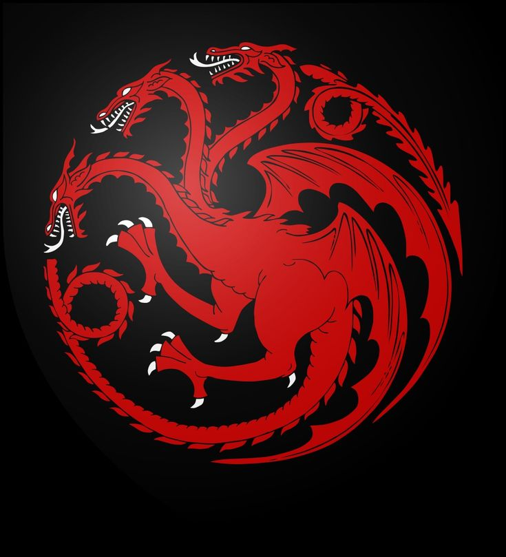

Game of Thrones
A Journey Through the Facts and Battles
Scroll down

The "Seven" Kingdoms
Although the characters repeatedly state that there are seven kingdoms in Westeros, there are actually nine kingdoms:
- The North
- The Vale
- The Iron Islands
- The Riverlands
- The Westerlands
- The Stormlands
- The Reach
- The Crownlands
- Dorne
The Red Wedding had an equal number of attackers and defenders (see graph below)
But the defenders did not know the attackers were armed and ready to attack. It was an unfair attack during an occasion meant to be joyous.
Daenerys's Dragons
Daenerys's dragons, Drogon, Rhaegal, and Viserion, are small compared to her ancestors' dragons. Balerion was the largest dragon, whose rider was Aegon the Conqueror.